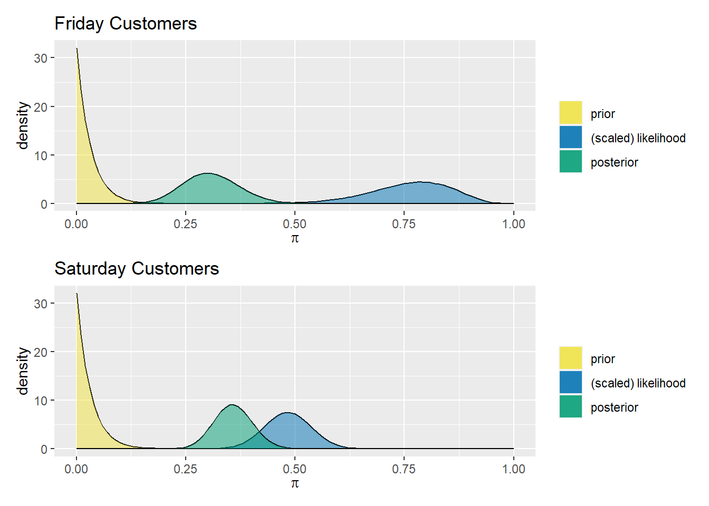

library("bayesrules")
library("patchwork")
library("tidyverse")
knitr::opts_chunk$set(echo = TRUE)
tips_df <- readr::read_csv("tips.csv")Journey so far
With hopes of learning more about a target probability \[\pi \in [0,1]\] we have been applying beta-binomial models
\[\begin{array}{rrcl} \text{prior: } & \pi & \sim & \text{Beta}(\alpha, \beta) \\ \text{likelihood: } & Y|\pi & \sim & \text{Bin}(y, \pi) \\ \text{posterior: } & \pi|(Y = y) & \sim & \text{Beta}(\alpha + y, \beta + n - y) \\ \end{array}\]
Experiment 1: Different Prior Averages
Using plot_beta
p1 <- bayesrules::plot_beta(4,8) +
labs(title = "Beta(4,8), E(pi) = 1/3")
p2 <- bayesrules::plot_beta(6,6) +
labs(title = "Beta(6,6), E(pi) = 1/2")
p3 <- bayesrules::plot_beta(8,4) +
labs(title = "Beta(8,4), E(pi) = 2/3")
# patchwork
p1 / p2 / p3Subset: Thursday Customers
Thursday <- tips_df |>
filter(day == "Thur")
n_Thursday <- nrow(Thursday)
y_Thursday <- Thursday |>
filter(smoker == "Yes") |>
nrow()Using plot_beta_binomial
p1 <- bayesrules::plot_beta_binomial(4, 8, y_Thursday, n_Thursday) +
labs(title = "Beta(4,8) prior")
p2 <- bayesrules::plot_beta_binomial(6, 6, y_Thursday, n_Thursday) +
labs(title = "Beta(6,6) prior")
p3 <- bayesrules::plot_beta_binomial(8, 4, y_Thursday, n_Thursday) +
labs(title = "Beta(8,4) prior")
# patchwork
p1 / p2 / p3bayesrules::summarize_beta_binomial(4, 8, y_Thursday, n_Thursday) |>
mutate_if(is.numeric, round, digits = 4) model alpha beta mean mode var sd
1 prior 4 8 0.3333 0.3000 0.0171 0.1307
2 posterior 21 53 0.2838 0.2778 0.0027 0.0521bayesrules::summarize_beta_binomial(6, 6, y_Thursday, n_Thursday) |>
mutate_if(is.numeric, round, digits = 4) model alpha beta mean mode var sd
1 prior 6 6 0.5000 0.5000 0.0192 0.1387
2 posterior 23 51 0.3108 0.3056 0.0029 0.0534bayesrules::summarize_beta_binomial(8, 4, y_Thursday, n_Thursday) |>
mutate_if(is.numeric, round, digits = 4) model alpha beta mean mode var sd
1 prior 8 4 0.6667 0.7000 0.0171 0.1307
2 posterior 25 49 0.3378 0.3333 0.0030 0.0546Experiment 2: Different Prior Variance
Certainty
p1 <- bayesrules::plot_beta(1,1) +
labs(title = "Uniform Prior: Beta(1,1), var(pi) = 0.0833")
p2 <- bayesrules::plot_beta(4,4) +
labs(title = "Vague Prior: Beta(4,4), var(pi) = 0.0278")
p3 <- bayesrules::plot_beta(16,16) +
labs(title = "Informative Prior: Beta(16,16), var(pi) = 0.0076")
# patchwork
p1 / p2 / p3Subset: Friday Customers
Friday <- tips_df |>
filter(day == "Fri")
n_Friday <- nrow(Friday)
y_Friday <- Friday |>
filter(smoker == "Yes") |>
nrow()Applying the Friday Crowd
p1 <- bayesrules::plot_beta_binomial(1, 1, y_Friday, n_Friday) +
labs(title = "Uniform Prior: Beta(1,1)")
p2 <- bayesrules::plot_beta_binomial(4, 4, y_Friday, n_Friday) +
labs(title = "Vague Prior: Beta(4,4)")
p3 <- bayesrules::plot_beta_binomial(16, 16, y_Friday, n_Friday) +
labs(title = "Informative Prior: Beta(16,16)")
# patchwork
p1 / p2 / p3bayesrules::summarize_beta_binomial(1, 1, y_Friday, n_Friday) |>
mutate_if(is.numeric, round, digits = 4) model alpha beta mean mode var sd
1 prior 1 1 0.5000 NaN 0.0833 0.2887
2 posterior 16 5 0.7619 0.7895 0.0082 0.0908bayesrules::summarize_beta_binomial(4, 4, y_Friday, n_Friday) |>
mutate_if(is.numeric, round, digits = 4) model alpha beta mean mode var sd
1 prior 4 4 0.5000 0.50 0.0278 0.1667
2 posterior 19 8 0.7037 0.72 0.0074 0.0863bayesrules::summarize_beta_binomial(16, 16, y_Friday, n_Friday) |>
mutate_if(is.numeric, round, digits = 4) model alpha beta mean mode var sd
1 prior 16 16 0.5000 0.5000 0.0076 0.0870
2 posterior 31 20 0.6078 0.6122 0.0046 0.0677Experiment 3: Different Data Sets
Skewed Prior
bayesrules::plot_beta(1,32) +
labs(title = "Skewed Prior: Beta(1,32), var(pi) = 0.0009")Subset: Saturday Customers
Saturday <- tips_df |>
filter(day == "Sat")
n_Saturday <- nrow(Saturday)
y_Saturday <- Saturday |>
filter(smoker == "Yes") |>
nrow()Friday versus Saturday
p1 <- bayesrules::plot_beta_binomial(1, 32, y_Friday, n_Friday) +
labs(title = "Friday Customers")
p2 <- bayesrules::plot_beta_binomial(1, 32, y_Saturday, n_Saturday) +
labs(title = "Saturday Customers")
# patchwork
p1 / p2
bayesrules::summarize_beta_binomial(1, 32, y_Friday, n_Friday) |>
mutate_if(is.numeric, round, digits = 4) model alpha beta mean mode var sd
1 prior 1 32 0.0303 0.0 9e-04 0.0294
2 posterior 16 36 0.3077 0.3 4e-03 0.0634bayesrules::summarize_beta_binomial(1, 32, y_Saturday, n_Saturday) |>
mutate_if(is.numeric, round, digits = 4) model alpha beta mean mode var sd
1 prior 1 32 0.0303 0.0000 0.0009 0.0294
2 posterior 43 77 0.3583 0.3559 0.0019 0.0436Weights
With a \(\text{Beta}(\alpha, \beta)\) prior distribution along with a posterior distribution \(\text{Beta}(\alpha + y, \beta + n - y)\) from observing \(y\) “successes” in \(n\) trials, we have their respective expected values,
\[\text{E}(\pi) = \displaystyle\frac{\alpha}{\alpha + \beta}, \quad \text{E}(\pi|Y = y) = \displaystyle\frac{\alpha + y}{\alpha + \beta + n}\] with a little bit of algebra
the algebra
\[\begin{array}{rcl} \text{E}(\pi|Y = y) & = & \displaystyle\frac{\alpha}{\alpha + \beta + n} + \displaystyle\frac{y}{\alpha + \beta + n} \\ ~ & = & \displaystyle\frac{\alpha}{\alpha + \beta + n} \cdot \displaystyle\frac{\alpha + \beta}{\alpha + \beta} + \displaystyle\frac{y}{\alpha + \beta + n} \cdot \displaystyle\frac{n}{n} \\ ~ & = & \displaystyle\frac{\alpha + \beta}{\alpha + \beta + n} \cdot \displaystyle\frac{\alpha}{\alpha + \beta} + \displaystyle\frac{n}{\alpha + \beta + n} \cdot \displaystyle\frac{y}{n} \\ ~ & = & \displaystyle\frac{\alpha + \beta}{\alpha + \beta + n} \cdot \text{E}(\pi) + \displaystyle\frac{n}{\alpha + \beta + n} \cdot \displaystyle\frac{y}{n} \\ \end{array}\]
we get
\[\text{E}(\pi|Y = y) = \displaystyle\frac{\alpha + \beta}{\alpha + \beta + n} \cdot \text{E}(\pi) + \displaystyle\frac{n}{\alpha + \beta + n} \cdot \displaystyle\frac{y}{n}\] That is, we can express the expected value of the posterior distribution as a weighted average of the expected value of the prior distribution \(\text{E}(\pi)\) and the sample success rate \(\frac{y}{n}\) since
\[\displaystyle\frac{\alpha + \beta}{\alpha + \beta + n} + \displaystyle\frac{n}{\alpha + \beta + n} = 1\]
- What happens if we have relatively small data sets?
- What happens if we have relatively large data sets?
Experiment 4: Does Order Matter?
Vague Prior Revisited
bayesrules::plot_beta(4,4) +
labs(title = "Vague Prior: Beta(4,4), var(pi) = 0.0278")Subsets: Lunch and Dinner
Lunch <- tips_df |>
filter(time == "Lunch")
n_Lunch <- nrow(Lunch)
y_Lunch <- Lunch |>
filter(smoker == "Yes") |>
nrow()Dinner <- tips_df |>
filter(time == "Dinner")
n_Dinner <- nrow(Dinner)
y_Dinner <- Dinner |>
filter(smoker == "Yes") |>
nrow()Lunch First, then Dinner
alpha_1 <- 4
beta_1 <- 4
p1 <- bayesrules::plot_beta_binomial(alpha_1, beta_1, y_Lunch, n_Lunch) +
labs(title = "Lunch First")
alpha_2 <- alpha_1 + y_Lunch
beta_2 <- beta_1 + n_Lunch - y_Lunch
p2 <- bayesrules::plot_beta_binomial(alpha_2, beta_2, y_Dinner, n_Dinner) +
labs(title = "then Dinner")
# patchwork
p1 / p2Lunch First
bayesrules::summarize_beta_binomial(alpha_1, beta_1, y_Lunch, n_Lunch) |>
mutate_if(is.numeric, round, digits = 4) model alpha beta mean mode var sd
1 prior 4 4 0.5000 0.5000 0.0278 0.1667
2 posterior 27 49 0.3553 0.3514 0.0030 0.0545then Dinner
bayesrules::summarize_beta_binomial(alpha_2, beta_2, y_Dinner, n_Dinner) |>
mutate_if(is.numeric, round, digits = 4) model alpha beta mean mode var sd
1 prior 27 49 0.3553 0.3514 3e-03 0.0545
2 posterior 97 155 0.3849 0.3840 9e-04 0.0306Dinner First, then Lunch
alpha_1 <- 4
beta_1 <- 4
p1 <- bayesrules::plot_beta_binomial(alpha_1, beta_1, y_Dinner, n_Dinner) +
labs(title = "Dinner First")
alpha_2 <- alpha_1 + y_Dinner
beta_2 <- beta_1 + n_Dinner - y_Dinner
p2 <- bayesrules::plot_beta_binomial(alpha_2, beta_2, y_Lunch, n_Lunch) +
labs(title = "then Lunch")
# patchwork
p1 / p2Dinner First
bayesrules::summarize_beta_binomial(alpha_1, beta_1, y_Dinner, n_Dinner) |>
mutate_if(is.numeric, round, digits = 4) model alpha beta mean mode var sd
1 prior 4 4 0.5000 0.5000 0.0278 0.1667
2 posterior 74 110 0.4022 0.4011 0.0013 0.0361then Lunch
bayesrules::summarize_beta_binomial(alpha_2, beta_2, y_Lunch, n_Lunch) |>
mutate_if(is.numeric, round, digits = 4) model alpha beta mean mode var sd
1 prior 74 110 0.4022 0.4011 0.0013 0.0361
2 posterior 97 155 0.3849 0.3840 0.0009 0.0306Data Invariance
Let \(\theta\) be any parameter of interest with prior pdf \(f(\theta)\). Then a sequential analysis in which we first observe a data point \(y_{1}\) and then a second data point \(y_{2}\) will produce the same posterior model of \(\theta\) as if we first observe \(y_{2}\) and then \(y_{1}\):
\[f(\theta|y1,y2)=f(\theta|y2,y1)\]
Similarly, the posterior model is invariant to whether we observe the data all at once or sequentially.
proof
[Please refer to section 4.5 of the textbook]
Experiment 5: The Whole Weekend
Uniform Prior Revisited
bayesrules::plot_beta(1,1) +
labs(title = "Uniform Prior: Beta(1,1), var(pi) = 0.0833")Subset: Sunday Customers
Sunday <- tips_df |>
filter(day == "Sun")
n_Sunday <- nrow(Sunday)
y_Sunday <- Sunday |>
filter(smoker == "Yes") |>
nrow()One Day at a Time
alpha <- 1
beta <- 1
p1 <- bayesrules::plot_beta_binomial(alpha, beta, y_Thursday, n_Thursday) +
labs(title = "Thursday First")
alpha <- alpha + y_Thursday
beta <- beta + n_Thursday - y_Thursday
p2 <- bayesrules::plot_beta_binomial(alpha, beta, y_Friday, n_Friday) +
labs(title = "then Friday")
alpha <- alpha + y_Friday
beta <- beta + n_Friday - y_Friday
p3 <- bayesrules::plot_beta_binomial(alpha, beta, y_Saturday, n_Saturday) +
labs(title = "then Saturday")
alpha <- alpha + y_Saturday
beta <- beta + n_Saturday - y_Saturday
p4 <- bayesrules::plot_beta_binomial(alpha, beta, y_Sunday, n_Sunday) +
labs(title = "then Sunday")
# patchwork
p1 / p2 / p3 / p4
Thursday First
alpha <- 1
beta <- 1
bayesrules::summarize_beta_binomial(alpha, beta, y_Thursday, n_Thursday) |>
mutate_if(is.numeric, round, digits = 4) model alpha beta mean mode var sd
1 prior 1 1 0.5000 NaN 0.0833 0.2887
2 posterior 18 46 0.2812 0.2742 0.0031 0.0558then Friday
alpha <- alpha + y_Thursday
beta <- beta + n_Thursday - y_Thursday
bayesrules::summarize_beta_binomial(alpha, beta, y_Friday, n_Friday) |>
mutate_if(is.numeric, round, digits = 4) model alpha beta mean mode var sd
1 prior 18 46 0.2812 0.2742 0.0031 0.0558
2 posterior 33 50 0.3976 0.3951 0.0029 0.0534then Saturday
alpha <- alpha + y_Friday
beta <- beta + n_Friday - y_Friday
bayesrules::summarize_beta_binomial(alpha, beta, y_Saturday, n_Saturday) |>
mutate_if(is.numeric, round, digits = 4) model alpha beta mean mode var sd
1 prior 33 50 0.3976 0.3951 0.0029 0.0534
2 posterior 75 95 0.4412 0.4405 0.0014 0.0380then Sunday
alpha <- alpha + y_Saturday
beta <- beta + n_Saturday - y_Saturday
bayesrules::summarize_beta_binomial(alpha, beta, y_Sunday, n_Sunday) |>
mutate_if(is.numeric, round, digits = 4) model alpha beta mean mode var sd
1 prior 75 95 0.4412 0.4405 0.0014 0.0380
2 posterior 94 152 0.3821 0.3811 0.0010 0.0309Subset: All Customers
n_all <- nrow(tips_df)
y_all <- tips_df |>
filter(smoker == "Yes") |>
nrow()All at Once
alpha <- 1
beta <- 1
bayesrules::plot_beta_binomial(alpha, beta, y_all, n_all) +
labs(title = "All at Once")alpha <- 1
beta <- 1
bayesrules::summarize_beta_binomial(alpha, beta, y_all, n_all) |>
mutate_if(is.numeric, round, digits = 4) model alpha beta mean mode var sd
1 prior 1 1 0.5000 NaN 0.0833 0.2887
2 posterior 94 152 0.3821 0.3811 0.0010 0.0309sessionInfo()R version 4.3.0 (2023-04-21 ucrt)
Platform: x86_64-w64-mingw32/x64 (64-bit)
Running under: Windows 10 x64 (build 19045)
Matrix products: default
locale:
[1] LC_COLLATE=English_United States.utf8
[2] LC_CTYPE=English_United States.utf8
[3] LC_MONETARY=English_United States.utf8
[4] LC_NUMERIC=C
[5] LC_TIME=English_United States.utf8
time zone: America/New_York
tzcode source: internal
attached base packages:
[1] stats graphics grDevices utils datasets methods base
other attached packages:
[1] lubridate_1.9.2 forcats_1.0.0 stringr_1.5.0 dplyr_1.1.3
[5] purrr_1.0.2 readr_2.1.4 tidyr_1.3.0 tibble_3.2.1
[9] ggplot2_3.4.3 tidyverse_2.0.0 patchwork_1.1.2 bayesrules_0.0.2
loaded via a namespace (and not attached):
[1] gridExtra_2.3 inline_0.3.19 rlang_1.1.1
[4] magrittr_2.0.3 snakecase_0.11.0 matrixStats_1.0.0
[7] e1071_1.7-13 compiler_4.3.0 loo_2.6.0
[10] callr_3.7.3 vctrs_0.6.3 reshape2_1.4.4
[13] pkgconfig_2.0.3 crayon_1.5.2 fastmap_1.1.1
[16] ellipsis_0.3.2 labeling_0.4.3 utf8_1.2.3
[19] threejs_0.3.3 promises_1.2.1 rmarkdown_2.24
[22] tzdb_0.4.0 markdown_1.8 ps_1.7.5
[25] nloptr_2.0.3 bit_4.0.5 xfun_0.40
[28] jsonlite_1.8.7 later_1.3.1 parallel_4.3.0
[31] prettyunits_1.1.1 R6_2.5.1 dygraphs_1.1.1.6
[34] stringi_1.7.12 StanHeaders_2.26.26 boot_1.3-28.1
[37] Rcpp_1.0.11 rstan_2.21.8 knitr_1.43
[40] zoo_1.8-12 base64enc_0.1-3 bayesplot_1.10.0
[43] httpuv_1.6.11 Matrix_1.5-4 splines_4.3.0
[46] igraph_1.4.3 timechange_0.2.0 tidyselect_1.2.0
[49] rstudioapi_0.15.0 yaml_2.3.7 codetools_0.2-19
[52] miniUI_0.1.1.1 processx_3.8.1 pkgbuild_1.4.0
[55] lattice_0.21-8 plyr_1.8.8 shiny_1.7.5
[58] withr_2.5.2 groupdata2_2.0.2 evaluate_0.21
[61] survival_3.5-5 proxy_0.4-27 RcppParallel_5.1.7
[64] xts_0.13.1 pillar_1.9.0 DT_0.28
[67] stats4_4.3.0 shinyjs_2.1.0 generics_0.1.3
[70] vroom_1.6.3 hms_1.1.3 rstantools_2.3.1
[73] munsell_0.5.0 scales_1.2.1 minqa_1.2.5
[76] gtools_3.9.4 xtable_1.8-4 class_7.3-21
[79] glue_1.6.2 janitor_2.2.0 tools_4.3.0
[82] shinystan_2.6.0 lme4_1.1-33 colourpicker_1.2.0
[85] grid_4.3.0 crosstalk_1.2.0 colorspace_2.1-0
[88] nlme_3.1-162 cli_3.6.1 fansi_1.0.4
[91] gtable_0.3.4 digest_0.6.33 farver_2.1.1
[94] htmlwidgets_1.6.2 htmltools_0.5.6 lifecycle_1.0.4
[97] mime_0.12 rstanarm_2.21.4 bit64_4.0.5
[100] shinythemes_1.2.0 MASS_7.3-58.4